未来的汽车应该是什么样子？也许这个话题放在三四年前，各大巨头还都各说各话，但如今对未来的勾画不约而同地走向了智能化、电气化、网联化还有共享化。就在两年前，同样是IAA车展，德国三大品牌同时开始用数字化勾画着汽车未来发展的蓝图，时隔两年，从数字化转型，到“瞰思未来”战略（CASE），奔驰在今年的IAA车展又将带来怎样的新科技和新思维？在这里我们就提前给大家做个梳理。
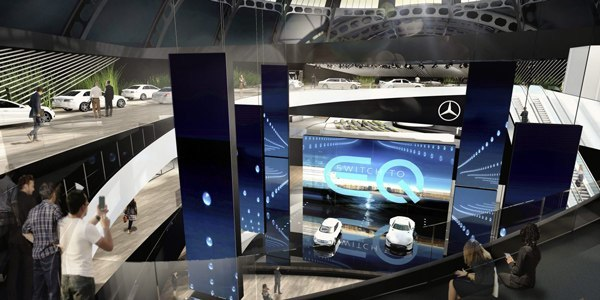
看技术：把混动的思维用在燃料电池的“节氢”上
尽管近些年电动车技术的发展异常火热，奔驰也投入巨额研发经费支持电动车的研发，但是在清洁能源上，奔驰对氢动力技术的研发始终没有停下脚步。此次IAA车展，奔驰将带来一款接近量产的氢燃料电池插电混动车型——GLC F-CELL。
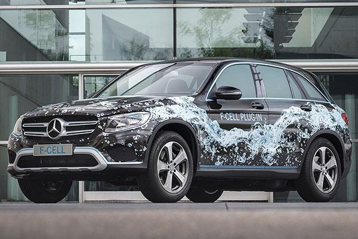
GLC F-CELL 燃料电池插电混动车型
众所周知，作为未来的清洁能源，氢燃料电池技术在技术成本、氢气存储安全性以及基础设施建设等因素，仍有许多未能完全解决的问题。奔驰在这一技术上，经过30年的经验积累。多年前就先后推出了多款燃料电池的车型在特定的市场中进行实际使用的测试，这其中也不乏基于奔驰B级车开发的F-CELL车型——B F-CELL。当然，也正是因为技术成本过高的原因，使得这一车型并未能实现推广。显然在成本的制约下，选择相对更为高端的GLC车型来推广燃料电池技术，要比起经济型B级车有着更大的市场生存的空间。
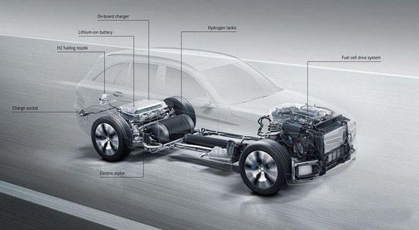
对于奔驰GLC F-CELL而言，其核心在于除了拥有一套氢燃料电池驱动系统以外，它还额外配备了一套锂离子电池组为电机驱动直接提供电能，这套电池组可通过外接插座进行充电，一次充电完成可实现纯电动模式下50公里左右的续航里程。对于燃料电池混合动力技术，通常是通过锂电池组回收燃料电池在行驶中的剩余能量，以及实现制动能量回收。而奔驰GLC F-CELL的关键在于将纯电驱动与燃料电池驱动进行了深度融合，就如同油电混动技术一样。在奔驰2011年推出的Citaro FuelCELL大巴上，就采用了类似的混动技术，尽管当时还不是插电式混合动力，依靠纯电驱动仅仅能行驶几公里，但是其却能节省50%的氢消耗量。此次GLC F-CELL的核心信息还并未发布，但不难想象，在采用了插电混动的模式下，不仅依靠锂电池驱动电动机行驶的里程更长，对氢燃料的消耗同样可以得到大幅削减。
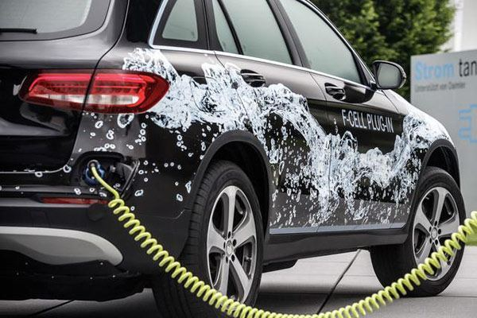
减小氢燃料消耗量，其带来的现实意义就是续航里程可以进一步加长，在2015年奔驰推出的F015概念车上，由于采用了同样的技术，其续航里程以及达到了令人咋舌的1100公里。尽管这还只是在概念车上的理论测算，但这也给工程师的设计带来了思维上的转变。依靠插电混动的方式，在 “可以接受”（500公里以上）的续航里程范围内，就可以大幅减小储氢罐的体积。奔驰的工程师也干脆将GLC F-CELL的两个存储量为4千克的碳纤维贮氢罐放置在前后轴之间最安全的位置。如此一来，储氢罐也不会对车内的乘坐空间造成过大的挤压，奔驰也更不需要为GLC进行太大设计上的改变。
根据奔驰此前的信息显示，GLC F-CELL已经在欧洲多个地区进行了500多次测试，除了完成所有常规动力车型的标准测试之外，还包括电力传动系统、燃料电池和所有动力总成部件的相互作用的特殊测试。而此次IAA车展，这台GLC F-CELL的这套氢燃料电池插电式混合动力系统，已经接近量产状态。这也被看做是在奔驰“瞰思未来”战略下，实现汽车电气化的一个重要的战略组成部分。
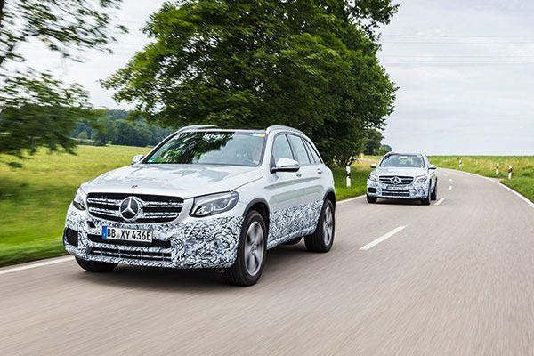
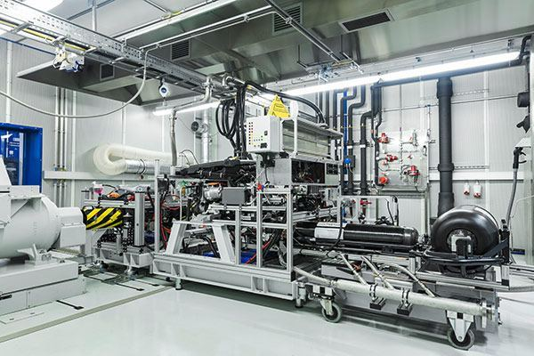
看战略：“瞰思未来”就这样改变了我们的出行方式
甭管是趋势所致还是被政策所逼，奔驰最终也还是走上了电动车的技术路线。2016年的巴黎车展上，奔驰发布了EQ品牌的第一款概念车“Generation EQ”，也正式掀起了奔驰电动化战略的序篇。在这之后，奔驰投入110亿美元用于加速纯电动汽车产品的研发、生产。在本届法兰克福车展，奔驰EQ品牌的第二款车——全新EQA纯电动紧凑车型即将亮相。
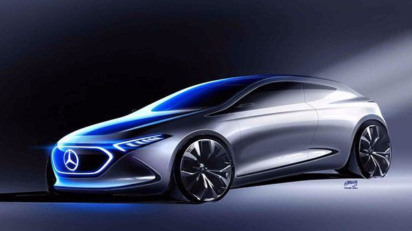
奔驰EQA概念车效果图
根据此前发布的信息，这款EQA将基于奔驰模块化纯电动架构（MEA）开发，在其量产后，它也将成为宝马i3最有力的竞争对手。尽管这款车的相关信息仍处于保密状态，但是前期曝光的一些细节图片，仍可以看出它有了不少目前最新的科技，比如它非常科幻的车灯，就使用最新的OLED技术。
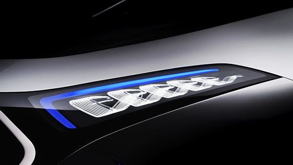
在“瞰思未来”战略下——这家百年的汽车制造商，正在通过汽车数字化实现由汽车制造商向互联网出行服务提供商的转型，而电动化也将成为奔驰未来技术的发展的核心。按照奔驰的计划，EQ品牌将涵盖奔驰的全系列车型，这也意味EQ系列的纯电动车，将着陆续涵盖SUV、轿车、轿跑和敞篷车等产品，从而形成完善的产品线。到2022年能有十款EQ系列的车型上市销售。
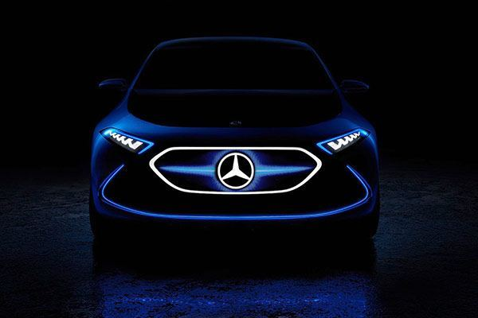
甭管是奔驰还是宝马，对未来出行方式的勾画都不约而同地走向了智能化、电气化、网联化以及共享化的方向。在本届法兰克福车展， smart的概念车也会成为最能吸引眼球的焦点。而这款smart vision EQ fortwo概念车，也被看做是首款集“瞰思未来”战略四大趋势的前瞻科技于一身的自动驾驶概念车型，为人们的未来出行，描绘了一个个人化、高效率和高灵活度的美好愿景。
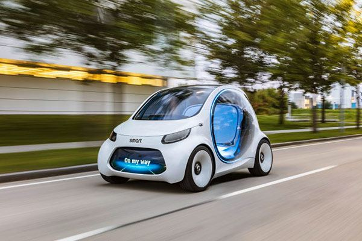
smart vision EQ fortwo概念车
对于这款smart vision EQ fortwo，它已不再是用于个人出行的工具，而是专为城市打造的共享汽车。除此之外，它技术的关键就像是拥有了一套高度智能化的思维系统。你可以通过手机将smart vision EQ fortwo概念车召唤到身边，在无人搭乘的时候，它能够自动前往充电站补充电能。自动驾驶系统可以迅速把你松抵达目的地。其位于车前端的显示屏跟行人又多了一层情感的传递，不仅可以跟行人互动，可以向外界发出警示和道路信息。这些也正是这款smart vision EQ fortwo概念车要传递给我们的一种对于未来出行生活的愿景。
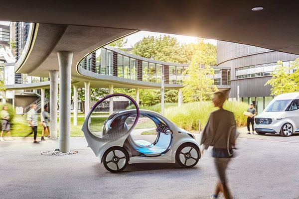
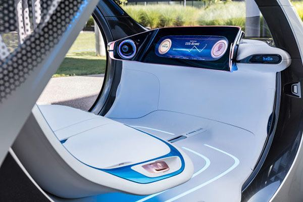
看新车：车展最吸引眼球的还是新车
说了这么多，其实最新观众的无疑还是新车。在此次奔驰的展台中，在车迷心中最具分量的无疑将是AMG即将推出的顶级跑车Project One。作为AMG推出一款Hypercar，在AMG成立50周年之际，其也加入到了与保时捷918 Spyder、法拉利LaFarreri以及迈凯伦P1竞争的行列。
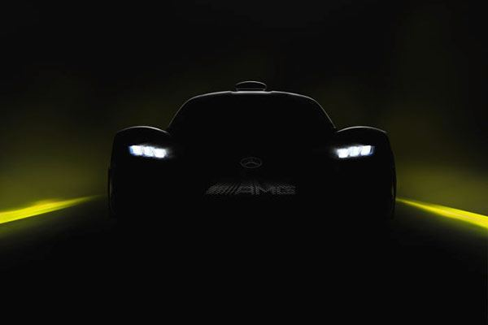
AMG Project One预告图
AMG这款顶级跑车堪称是全球首款直接搭载AMG F1赛车混动技术的AMG Hypercar超级跑车。它将搭载一台1.6T V6涡轮增压发动机和4台电动机组成的混动系统。其综合功率将超过1014马力。发动机直接使用了梅赛德斯AMG F1车队，2015年的W06 Hybrid F1赛车中的1.6T V6发动机，并针对在公路使用需求，对曲轴、活塞的部件进行了调整，并对其电子系统进行重新的优化。其寿命大约在3.1万英里（约合5万公里），并且该发动机的转速可以轻松突破10000rpm以上。
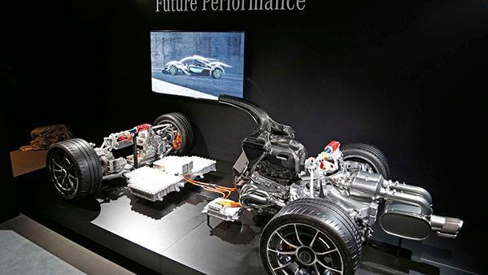
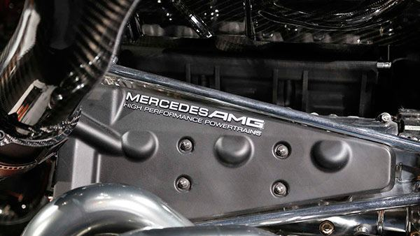
根据海外媒体透露，Project One超级跑车的价格会高达240万欧元，尽管如此，其全球限量275台的份额，在其正式发布之前就早已被订购一空。
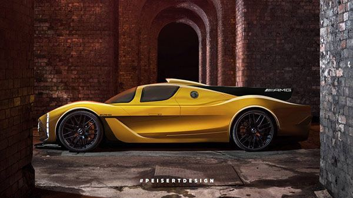
AMG Project One的海外预测图
除此之外，全新的S Coupe以及S敞篷也将在法兰克福车展正式亮相，其优雅以及豪华的内在魅力，说它是一台dream car也并不为过。最值得一提的是，在S Coupe以及S敞篷上，其尾灯采用了OLED技术，总共66个照明单元通过多级控制技术，可以在不同的驾驶条件以及环境亮度需求下，调节灯光的强度。
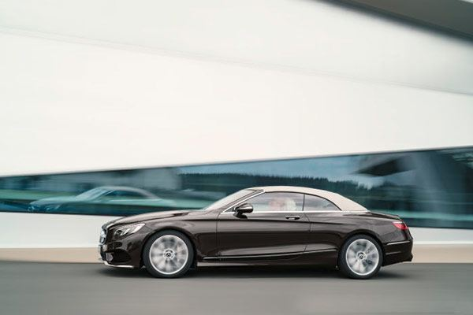
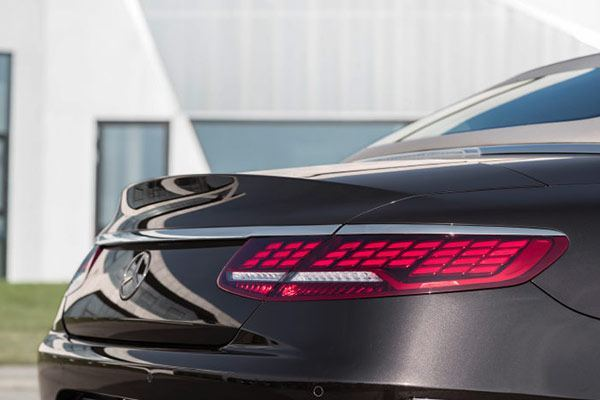
数字化技术引入，也将新一代S级车型带入到了新的技术时代，全新的S Coupe以及S敞篷都换上了与新一代S级车型上相同的技术，内饰的设计诸如仪表盘与中央显示屏，都换上了拥有一体式结构的双12.3英寸的液晶显示屏。新一代COMAND Online可以通过近场通信技术将智能手机转换成数字车钥匙。
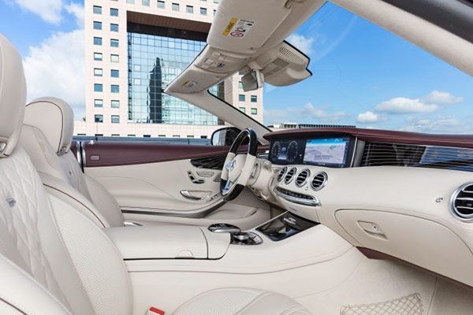
作为今年法兰克福车展最值得关注的品牌，奔驰将会在此次车展推出多达9款新车，除了我们上述提到的这些，当然还有全新的X级皮卡以及V Class限量版。
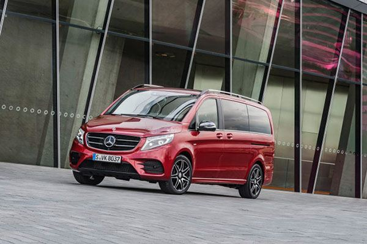
V Class stylish Limited Edition
车云小结：
就在法兰克福车展之前，奔驰更新了最新的销量数据，今年前八个月全球销售量累计1,496,406台，比上年同期增长12.8％。仅8月在华销量数据，梅赛德斯-奔驰及smart品牌8月销量为52,360辆，同比增长24%；前8个月，梅赛德斯-奔驰及smart品牌累计销量达406,777辆，同比增长32%。
汽车数字化正在加速奔驰产品与技术的更新换代的速度，这也成为近一两年奔驰持续高增长背后的支撑。作为汽车品牌中的历史最久的百年品牌，从数字化转型到瞰思未来战略，奔驰在加快向互联网移动出行服务商的转型，也在加快自我革新的步伐。汽车已不再是交通工具，而是一个科技产品。这次法兰克福车展奔驰还能带给我们怎样的惊喜？还是让我们到时看吧……！